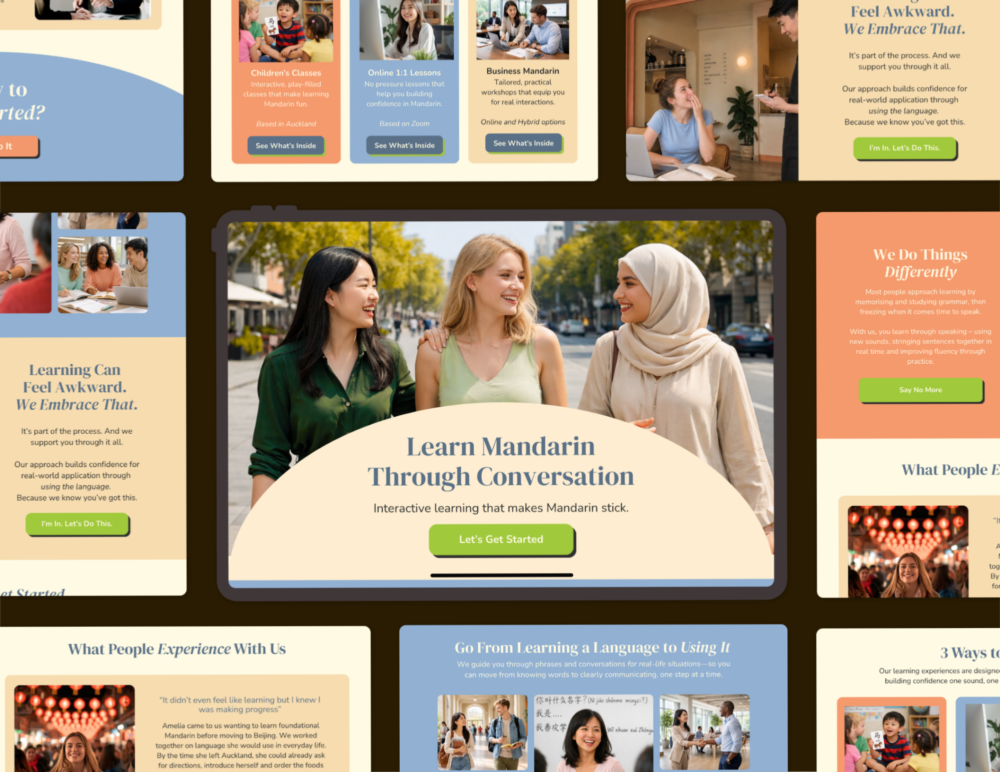
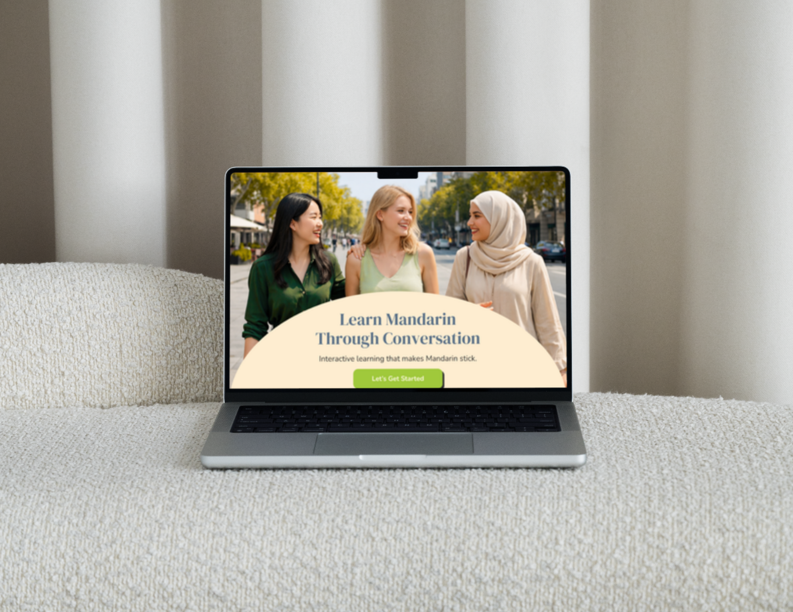

Step Into What's Next
With strategic partnership and digital systems for shifting from "more of the same" into your next level.
Back Yourself at a New Level
Businesses go through phases. You're ready for the next one. But until now, you've been standing at the edge of that, hesitating because you know your current setup isn't designed for what's next. It's built to support what you've done until now. And if you take your hands off those levers to shift into the next phase, who's going to pull them instead? It's not about doing more. It's about creating the foundations at a new level.
See From a Higher Vantage Point
So you can see the fuller picture of how everything connects.
Elevate Your Processes
So your capacity and bandwidth are freed up to be refocussed.
Set Up Systems for What's Next
Because you know you're ready to shift into the next level.
Elevate Your Processes
Redesign how the business works so energy can move from knee-jerking and feeling pulled in different directions to what will make an actual difference. See examples below.
A Centralised 'Second Brain'
Get what's currently living in your head into a space you can see, share and use. Your knowledge, decisions, ideas, context and ways of working are stored where only you have access. Create a second brain for the business that captures what matters, makes it easy to find and gives others access to the knowledge they need.
Ownership-Centred Workflows
Build ownership into the way your team operates, instead of everything coming back to you. When one person has to delegate and decide, work gets stuck. Redesign workflows around realms of ownership, so people aren't just responsible for tasks — they're responsible for keeping their area moving, spotting hold-ups and proposing solutions.
Standardised Systems
Systemise how things get done, even when you're not there. When the same questions and processes come up repeatedly, the answers shouldn't depend on who happens to be available. Build clear, repeatable ways of working so processes can be picked up by someone else, common issues can be handled without escalation and the business doesn't have to reinvent the answer every time.
Set Up Systems for What's Next
Getting a higher vantage point gives you a fuller picture. Elevating your processes gets your capacity back. Building systems for growth will actually get you to that next level.
Growing From Time-Capped to Structured Ladder of Offers
When the signature offer starts feeling like a bottleneck for growth, there are options. This project took a photographer from one main offer to a ladder of offers that provide flexibility and serve clients at different levels.


Shifting From "Spaghetti at the Wall" to Strategic Clarity
If you feel like you're being pulled between platforms trying to find your footing, there are strategies that can help. This project took a language teacher from one of many options to the go-to for her unique philosophy and style of teaching.
Hey, I'm Kaia
I bring strategic thinking, operational insight and digital know-how to service-based businesses navigating what's next.
I work alongside founders and teams to untangle complexity, spot what’s getting in the way, and turn ideas into practical systems and solutions. Whether you need a strategic brain to help shape the next move or someone who can get into the detail and make it happen, I bring both the higher level thinking and hands-on implementation.
A strategic partner who sees the fuller picture and gets stuck in.
Let's Connect
If you’re at a point where you need to step back, figure out what’s next and shift your trajectory, let’s talk. Bring me the messy version. I’m good at shaping what's needed.